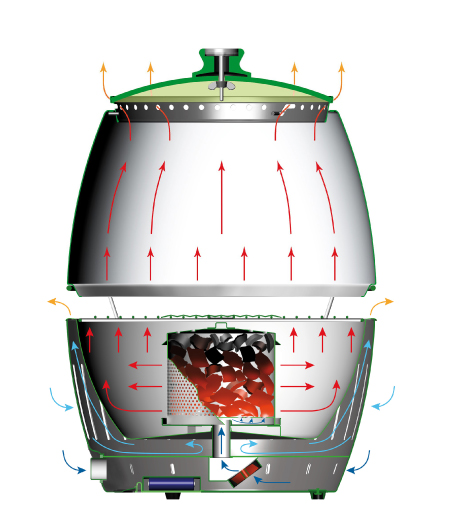

CONCEPTO
Idea simple, gran efecto- Ventilador alimentado por pilas que proporciona aire al carbón
- La barbacoa está lista para cocinar tras 3-4 minutos
- El interruptor ON/OFF actúa como regulador infinito de la temperatura
- Gracias a su construcción de doble capa el bol exterior no se calienta y se puede tocar en cualquier momento
- La barbacoa se puede transportar en cualquier momento durante su uso
- Su diseño impide que la grasa de la comida gotee en el carbón y se queme produciendo humo
- La barbacoa puede ser desmontada por completo y es fácil de limpiar
- LotusGrill es el más seguro y rápido en su especie

El aire frío es absorbido a través de las rejillas inferiores y transportado por el tubo hasta el interior del contenedor del carbón.A través de las rejillas superiores del bol exterior el aire frío fluye por el hueco. Gracias a esto permanece frío el bol exterior.